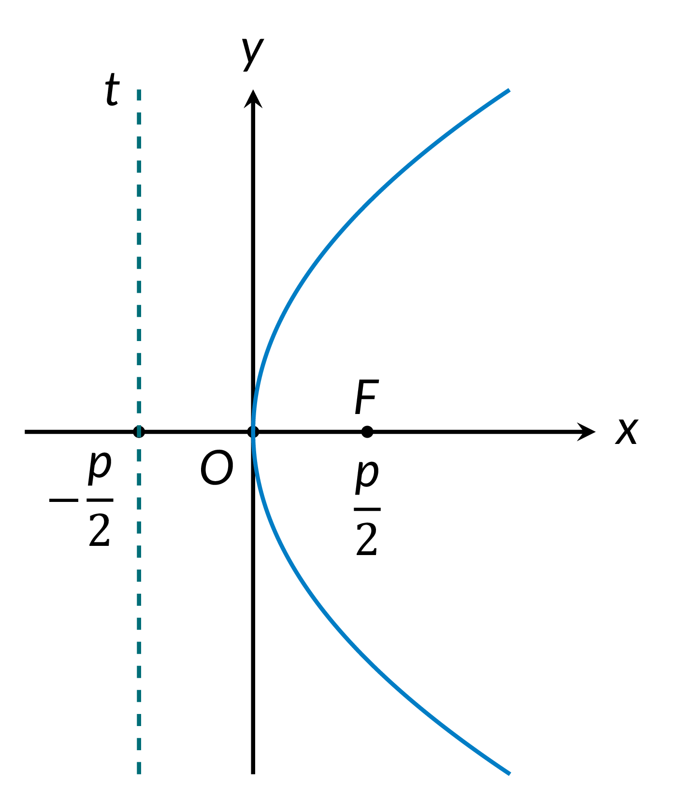
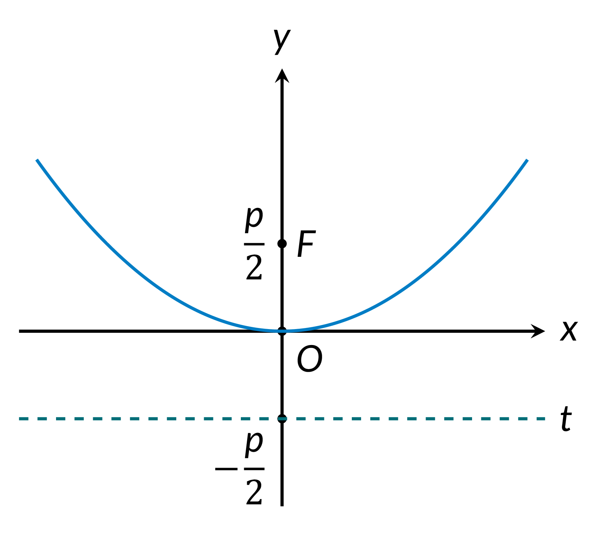
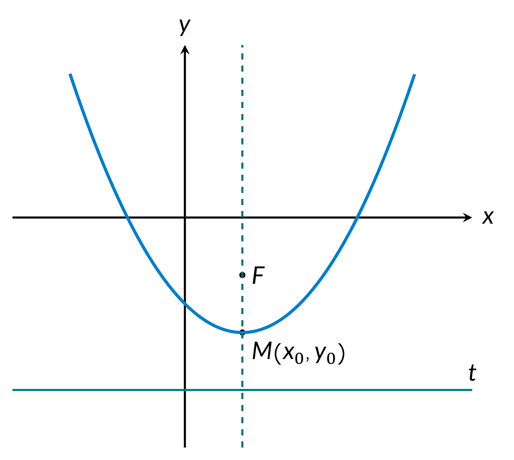

Focal parameter: $p$
Focus: $F$
Vertex: $M\left( x_0, y_0\right)$
Real numbers: $A, B, C, D, E, F, p, a, b, c$
- Equation of a Parabola (Standard Form)
$$y^2 = 2px$$

Equation of the directrix
$$ x = -\dfrac{p}{2}$$
Coordinates of the vertex
$$M(0,0)$$
- General Form
$$Ax^2 + Bxy + Cy^2 + Dx + Ey + F = 0,$$
where $B^2 - 4AC = 0$.
- $y = ax^2,\quad p = \dfrac{1}{2a}$.
Equation of the directrix
$$y = -\dfrac{p}{2}$$
Coordinates of the focus
$$F\big( 0,\dfrac{p}{2}\big)$$
Coordinates of the vertex
$$M(0,0)$$

- General Form, Axis Parallel to the y-axis
$$Ax^2 + Dx + Ey + F = 0\quad \text{($A,E$ nonezero)}$$
$$y = ax^2 + bx + c,\quad p = \dfrac{1}{2a}$$
Equation of the directrix
$$y = y_0 - \dfrac{p}{2}$$
Coordinates of the focus
$$F\Big( x_0, y_0+\dfrac{p}{2} \Big)$$
Coordinates of the vertex
$$x_0 = -\dfrac{b}{2a},\, y_0 = ax_0^2 + bx_0 + c = \dfrac{4ac - b^2}{4a}$$
